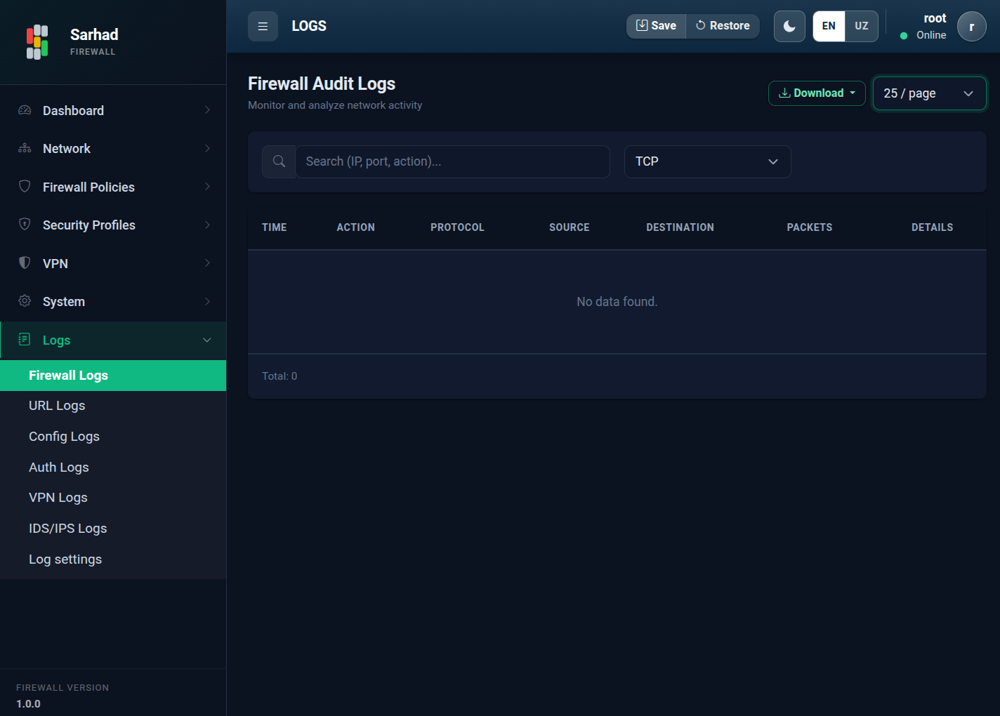
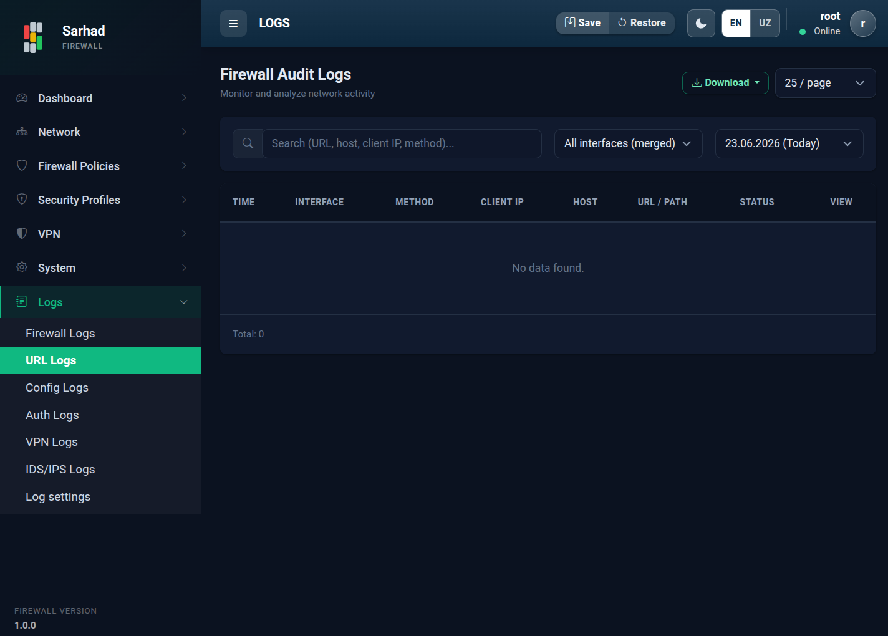
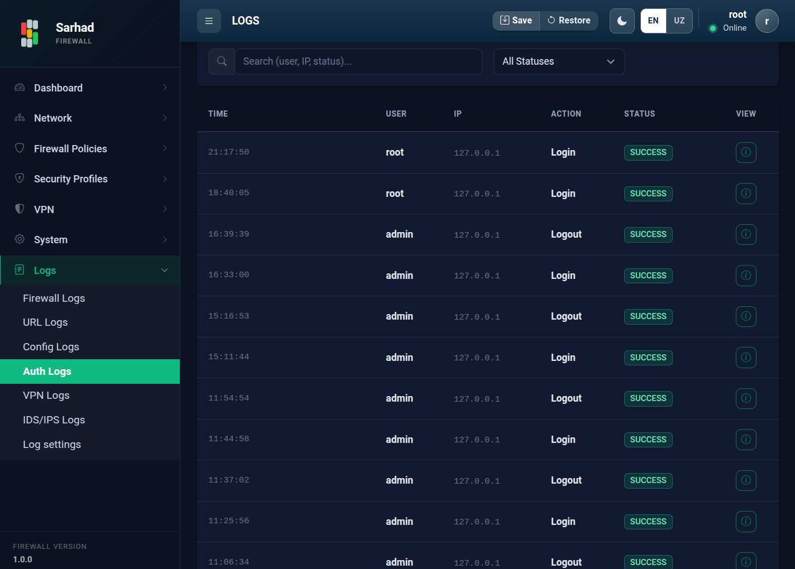
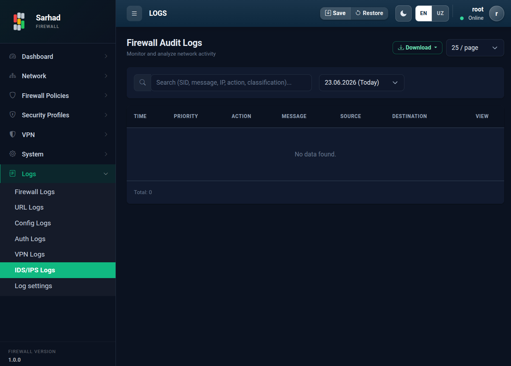

1. Jurnallar (Logs)
Sarhad NGFW tizimda sodir bo’layotgan barcha muhim hodisalarni batafsil yozib
boradi. Jurnallar tizim faoliyatini kuzatish, muammolarni aniqlash va
xavfsizlik tekshiruvlari uchun zarur. Bu bo’limga o’tish uchun chap menyudan
Logs guruhini oching (/logs).
Jurnallar turlar bo’yicha ajratilgan — har bir turi chap menyudagi alohida bo’lim orqali ochiladi va o’ziga xos ustunlarga ega.
1.1. Firewall Logs
Firewall qoidalari tomonidan bloklangan (drop) yoki ruxsat etilgan trafik hodisalari.
{kind=link}

Ustunlar: Time (vaqt), Action (amal — permit/deny), Protocol, Source (manba), Destination (manzil), Packets (paketlar soni), Details (tafsilotlar).
1.2. URL Logs
TLS tekshiruvi (TLS trafigini tekshirish (TLS Interception)) yoqilgan interfeyslarda ko’rilgan veb-manzillar jurnali.
{kind=link}

Ustunlar: Time, Interface, Method (GET/POST), Client IP (mijoz IP), Host (sayt), URL Path (manzil yo’li), Status (HTTP holati).
1.3. Config Logs
Konfiguratsiyadagi o’zgarishlar (firewall, NAT, marshrut, interfeys va h.k.).

Ustunlar: Time, User (foydalanuvchi), IP, Action (amal), Target (nishon — qaysi obyekt o’zgartirildi), Details.
1.4. Auth Logs
Tizimga kirish va chiqish hamda parol o’zgarishlari.
{kind=link}

Ustunlar: Time, User, IP, Action (login/logout), Status (muvaffaqiyatli yoki muvaffaqiyatsiz).
1.5. VPN Logs
VPN autentifikatsiyasi hamda sessiyalarning ochilishi va yopilishi.

1.6. IDS/IPS Logs
Hujumlarni aniqlash tizimi (Hujumlarni aniqlash va oldini olish (IDS/IPS)) yaratgan ogohlantirishlar.
{kind=link}

Ustunlar: Time, Priority (muhimlik darajasi), Action, Message (tavsif), Source, Destination.
1.7. Filtrlash, qidirish va yuklab olish
Barcha jurnal turlarida quyidagi vositalar mavjud:
Qidiruv — kalit so’z bo’yicha yozuvlarni izlash.
Sana oralig’i — boshlanish va tugash sanasini tanlab, ma’lum davr yozuvlarini ko’rish.
Protokol filtri — Firewall jurnallarini protokol bo’yicha saralash.
Tafsilotlar — yozuvning to’liq tafsilotini ko’rish uchun qatorni ikki marta bosing (yoki View tugmasini bosing).
Download — joriy jurnalni tashqi faylga yuklab olish (hisobot yoki tashqi tahlil uchun).
1.8. Log settings (saqlash muddati)
Jurnallar vaqt o’tishi bilan ko’p joy egallaydi. Log settings
(/logs/settings) bo’limida avtomatik tozalash siyosatini sozlash mumkin.

Keep all logs for … days — yozuvlar necha kun saqlanishi. Bundan eski yozuvlar avtomatik o’chiriladi.
Maximum disk for IDS/IPS … GiB — IDS/IPS jurnallari uchun ajratilgan maksimal disk hajmi.
Emergency cleanup at … % disk used — disk shu foizga to’lganda favqulodda tozalashni ishga tushirish.
Run cleanup now — eski yozuvlarni darhol qo’lda tozalash.
Save — sozlamalarni saqlash; Restore defaults — standart qiymatlarga qaytarish.
Sahifa pastida oxirgi tozalash (Last cleanup pass) qachon o’tkazilgani ko’rsatiladi.
Tip
Muvaffaqiyatsiz kirish urinishlari (Auth jurnalidagi “failure” yozuvlari) ni muntazam tekshirib turing — ko’p sonli muvaffaqiyatsiz urinishlar parolni topishga (brute-force) urinish belgisi bo’lishi mumkin.
1.9. Bog’liq bo’limlar
Tarmoq trafigi statistikasi: Trafik monitoringi (Flow / IPFIX)
Xavfsizlik ogohlantirishlari (IDS/IPS): Hujumlarni aniqlash va oldini olish (IDS/IPS)